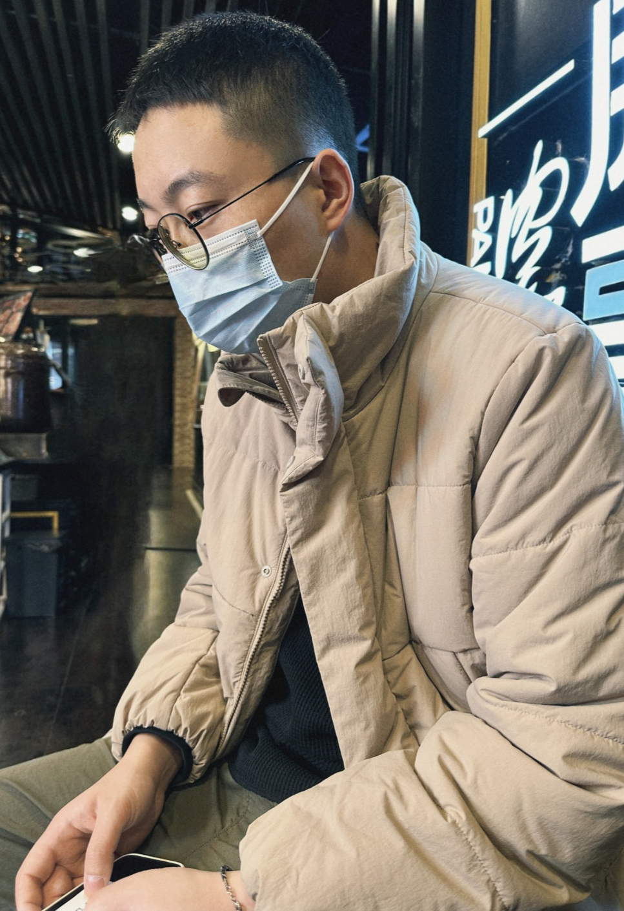

|  | Postdoctoral Researcher 3/F, 17W, Science Park West Avenue, Hong Kong Science Park, Hong Kong. |
I am currently a postdoctoral fellow at the Centre for Artificial Intelligence and Robotics, Hong Kong Institute of Science & Innovation, Chinese Academy of Sciences. I am fortunate to work with Prof. Zhaoxiang Zhang. I received my Ph.D. in Pattern Recognition and Intelligent Systems from the Institute of Automation, Chinese Academy of Sciences, where I was fortunate to be advised by Prof. Cheng-Lin Liu and Prof. Xu-Yao Zhang. Prior to this, I received the B.E. degree from Tsinghua University.
Research Highlights: My research interests include topics in reliability (e.g., confidence estimation, failure detection) and adaptability (e.g., continual learning, novel class discovery) of mechine learning models, especially in the open world/environment applications.
I am open to discussion or collaboration. Feel free to contact me if you are interested.
Learning by Seeing More Classes.
Fei Zhu, Xu-Yao Zhang, Rui-Qi Wang, Cheng-Lin Liu.
IEEE Trans. Pattern Analysis and Machine Intelligence (TPAMI), 2023. [paper]
OpenMix: Exploring Outlier Samples for Misclassification Detection.
Fei Zhu, Zhen Cheng, Xu-Yao Zhang, Cheng-Lin Liu.
In Proc. of the IEEE/CVF Conference on Computer Vision and Pattern Recognition (CVPR), 2023.
Rethinking Confidence Calibration for Failure Prediction.
Fei Zhu, Zhen Cheng, Xu-Yao Zhang, Cheng-Lin Liu.
In Proc. of the 17th European Conference on Computer Vision (ECCV), 2022. [paper] [arxiv] [code]
Prototype Augmentation and Self-Supervision for Incremental Learning.
Fei Zhu, Xu-Yao Zhang, Chuang Wang, Fei Yin, Cheng-Lin Liu.
In Proc. of the IEEE/CVF Conference on Computer Vision and Pattern Recognition (CVPR), 2021, oral 4%. [paper] [code]
Class-Incremental Learning via Dual Augmentation.
Fei Zhu, Zhen Cheng, Xu-Yao Zhang, Cheng-Lin Liu.
In Proc. of the 35th Conference on Advances in Neural Information Processing Systems (NeurIPS), 2021. [paper] [code]
Calibration for Non-Exemplar Based Class-Incremental Learning.
Fei Zhu, Xu-Yao Zhang, Cheng-Lin Liu.
In Proc. of International Conference on Multimedia and Expo (ICME), 2021, oral 15%. [paper] [code]
Class Incremental Learning: A Review and Performance Evaluation (In Chinese).
Fei Zhu, Xu-Yao Zhang, Cheng-Lin Liu.
Acta Automatica Sinica, 2023, invited reviews. [paper]
Adversarial Training with Distribution Normalization and Margin Balance.
Zhen Cheng, Fei Zhu, Xu-Yao Zhang, Cheng-Lin Liu.
Pattern Recognition, 2023. [paper]
Training with Scaled Logits to Alleviate Class-level Over-fitting in Few-shot Learning.
Rui-Qi Wang, Fei Zhu, Xu-Yao Zhang, Cheng-Lin Liu.
Neurocomputing, 2023. [paper]
Decoding lip language using triboelectric sensors with deep learning.
Yi-Jia Lu*, Han Tan*, Jia Cheng*, Fei Zhu, Bing Liu, Shan-Shan Wei, LinHong Ji, Zhong-Lin Wang.
Nature Communications, 2022, (Highlight paper in machine learning). [paper]
Average of Pruning: Improving Performance and Stability of Out-of-Distribution Detection.
Zhen Cheng, Fei Zhu, Xu-Yao Zhang, Cheng-Lin Liu.
arXiv:2303.01201, 2023. [paper]